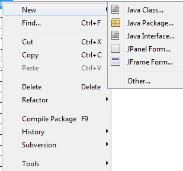
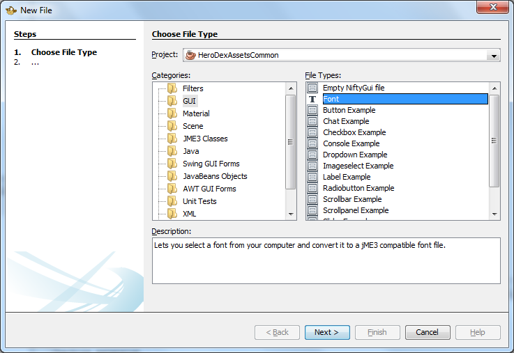
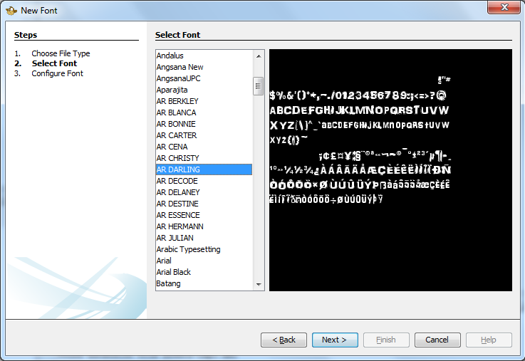
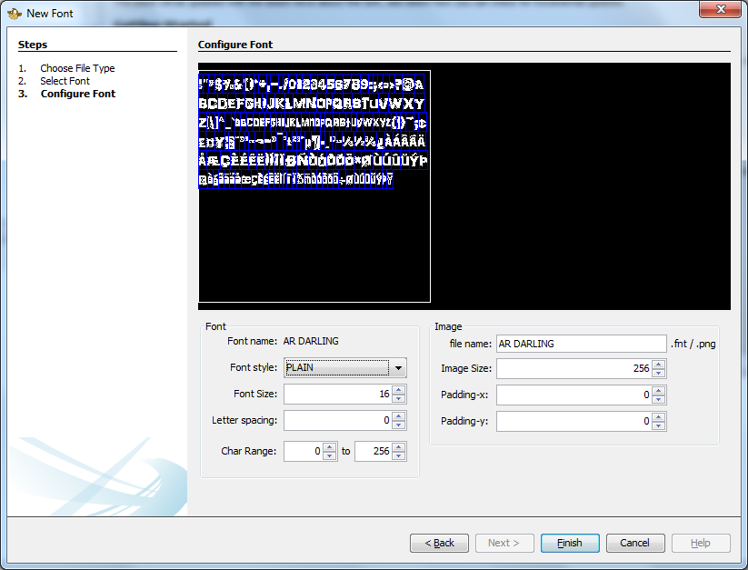

Font Creation
Most jME3 projects use Bitmap Fonts in order to display text to the user. This is because they render much faster than alternatives, although they do have a number of limitations. The main limitation being that the text will not scale in or out very well, it is designed to be displayed at a certain pixel size on the screen and will lose quality if it zooms too far in or out from that size.
All current jME3 GUI libraries use Bitmap Fonts, as does the BitmapText class provided within jME3.
Bitmap Fonts are actually composed of two files. One is a PNG image containing the individual letters, the other is a .fnt text file containing definitions of all of the characters supported by the font and where to find them inside the PNG image.
The SDK provides a tool for automatically creating a Bitmap Font from any font installed on your computer.
To create a font right click on the asset folder where you want to create the font, for example Interface/Fonts.
Open the “new sub menu and then select “other.

Within the window that pops up select GUI and then Font then click Next

A list of every standard font installed on your system is then displayed, select the font that you would like to use to create the Bitmap Font file from and then click Next.
When selecting fonts you should check that this use does not breach the license of the font.

With your font selected you can move onto the final screen which looks as follows:

Font Settings
The settings in the box to the left configure how the font is rendered. The Font Name is shown again to confirm your choice. Use the Back button if you want to change your mind.
The Style (For example Bold, Plain, Italic) and Font Size (in Points) can be selected as can the spacing between letters.
The Char Range selects the characters to render from the Unicode Character set. The default range of 0 to 256 renders every displayable character used in the most western languages, however the range can be extended if more characters are needed at the expense of a larger Image file.
Image Settings
The settings in the box to the right control the generated files.
The first option specifies the file name. This should not contain a file extension as two files will be generated, both using this name but one with a .fnt extension and one with a .png extension. Note that as the generated .fnt file references the .png one then if you rename the files after generating them you will need to go into the .fnt file and manually update the reference.
The next setting shows the Image Size of the image to produce. It is recommended that you use a square power-of-two texture (256x256, 512x512, etc) for maximum performance across various graphics cards.
The final two settings are for the horizontal and vertical padding to add around each character. For most cases these can be left as 0 but sometimes it can be useful to expand them.
Preview
The black area at the top of the window shows a preview of the generated file. You can use it to get some idea of what the characters will look like. The blue lines show the edges between the various characters that make up the font.
Finishing
When you are ready press Finish to generate the files or Cancel to abort.
Advanced Effects
The generated file is a standard PNG file so it can be loaded into an image editing program and effects added. For example you could add a padding onto each of the characters using the padding-x and padding-y settings and then use that to add an outer glow, drop shadow, or anything else you liked.
When rendered the Bitmap Font is multiplied with the text colour specified so if the text is set to white then any colour can be used inside the PNG file. If the PNG file just uses white then any colour can be used for the text. Furthermore the two settings can be combined if desired although this should be done with care as the multiplication will tend to make colours darker or even disappear entirely. (For example red multiplied with green gives black).